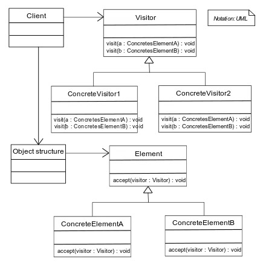

In this article:
- What is a Visitor Pattern?
- What problems does it solve?
- Real-world code example
What is a Visitor Pattern?
The Visitor Pattern helps add new capabilities to a composite of objects.
 Source
{kind=link}
What problems does it solve?
The Visitor Pattern helps solve following problems:
- Separation of Concerns: The Visitor Pattern separates algorithms from the objects on which they operate. This allows for clean code organization by keeping algorithms and operations separate from the data structures they operate on.
- Extensibility: It allows you to add new operations to existing object structures without modifying those structures. This is especially useful when dealing with complex object hierarchies where adding new functionality directly to the classes would lead to code bloat and tight coupling.
- Traversal of Object Structures: It provides a way to traverse complex object structures while performing some action on each element of the structure. This is particularly useful in scenarios where you need to process every element of a data structure in a specific order or with a specific algorithm.
Real-world code example
// Element protocol representing the items on the menu
protocol MenuItem {
func accept(visitor: OrderVisitor)
}
// Concrete item types
class Coffee: MenuItem {
let name: String
let price: Double
init(name: String, price: Double) {
self.name = name
self.price = price
}
func accept(visitor: OrderVisitor) {
visitor.visit(self)
}
}
class Tea: MenuItem {
let name: String
let price: Double
init(name: String, price: Double) {
self.name = name
self.price = price
}
func accept(visitor: OrderVisitor) {
visitor.visit(self)
}
}
class Pastry: MenuItem {
let name: String
let price: Double
init(name: String, price: Double) {
self.name = name
self.price = price
}
func accept(visitor: OrderVisitor) {
visitor.visit(self)
}
}
// Visitor protocol defining the operations to be performed on menu items
protocol OrderVisitor {
func visit(_ item: Coffee)
func visit(_ item: Tea)
func visit(_ item: Pastry)
}
// Concrete visitor implementing operations on menu items
class TotalCostVisitor: OrderVisitor {
var totalCost = 0.0
func visit(_ item: Coffee) {
totalCost += item.price
}
func visit(_ item: Tea) {
totalCost += item.price
}
func visit(_ item: Pastry) {
totalCost += item.price
}
}
class ItemDetailsVisitor: OrderVisitor {
var details = ""
func visit(_ item: Coffee) {
details += "Coffee: \(item.name), Price: $\(item.price)\n"
}
func visit(_ item: Tea) {
details += "Tea: \(item.name), Price: $\(item.price)\n"
}
func visit(_ item: Pastry) {
details += "Pastry: \(item.name), Price: $\(item.price)\n"
}
}
// Example usage
let items: [MenuItem] = [Coffee(name: "Espresso", price: 2.5), Tea(name: "Green Tea", price: 2.0), Pastry(name: "Croissant", price: 3.0)]
let totalCostVisitor = TotalCostVisitor()
for item in items {
item.accept(visitor: totalCostVisitor)
}
print("Total cost of the order: $\(totalCostVisitor.totalCost)")
let itemDetailsVisitor = ItemDetailsVisitor()
for item in items {
item.accept(visitor: itemDetailsVisitor)
}
print("Order details:")
print(itemDetailsVisitor.details)